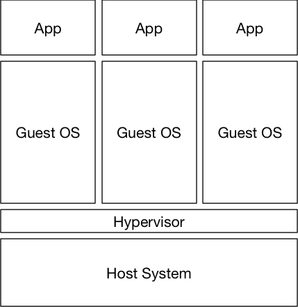
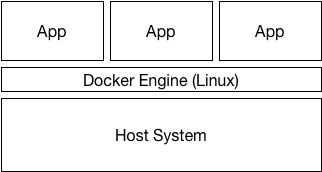

Docker Jumpstart
What is Docker
lightweight virtualization
don't think in processes
think in individual container
hight level of abstraction
de facto standard for container
Abstraction (Linux)
libvirt
LXC
systemd-nspawn
or libcontainer since v0.9
Container
self contained program
standard "box"
based on a blueprint -> Image
Image
blueprint of a container
immutable
Repository
Standard Docker Hub [hub.docker.com](https://hub.docker.com/)
private repos like Nexus
Container

Comparison VM and Container
Host with VMs |
Host with Container |
Start
Server and Client [getDocker](https://www.docker.com/community-edition#/download)
the client interacts with any server
Docker comes with some tools
Hands On
the docker cli
the docker-machine cli
basic docker commands
first container
How to create an image
Dockerfile
build
ready to use
Recap
the docker client CLI interacts with the daemon
Dockerfile contains the blueprint
images are immutable
container are based on images
Next: Networking simple
Networking
simple bridges
overlay networks (advanced)
MACVlan & IPVlan (advanced)
Advanced Networking
These topics might be covered in the advanced session:
overlay network
MACVlan & IPVlan
Recap
plug container to a switch
DNS service out of the box
Next: Volumes
Docker Compose
a YAML description
blueprint for some services